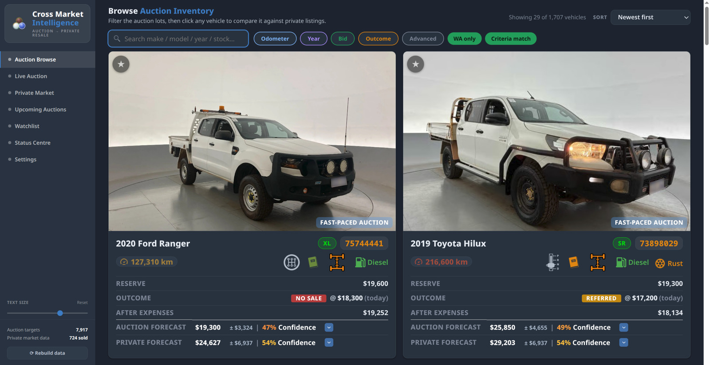
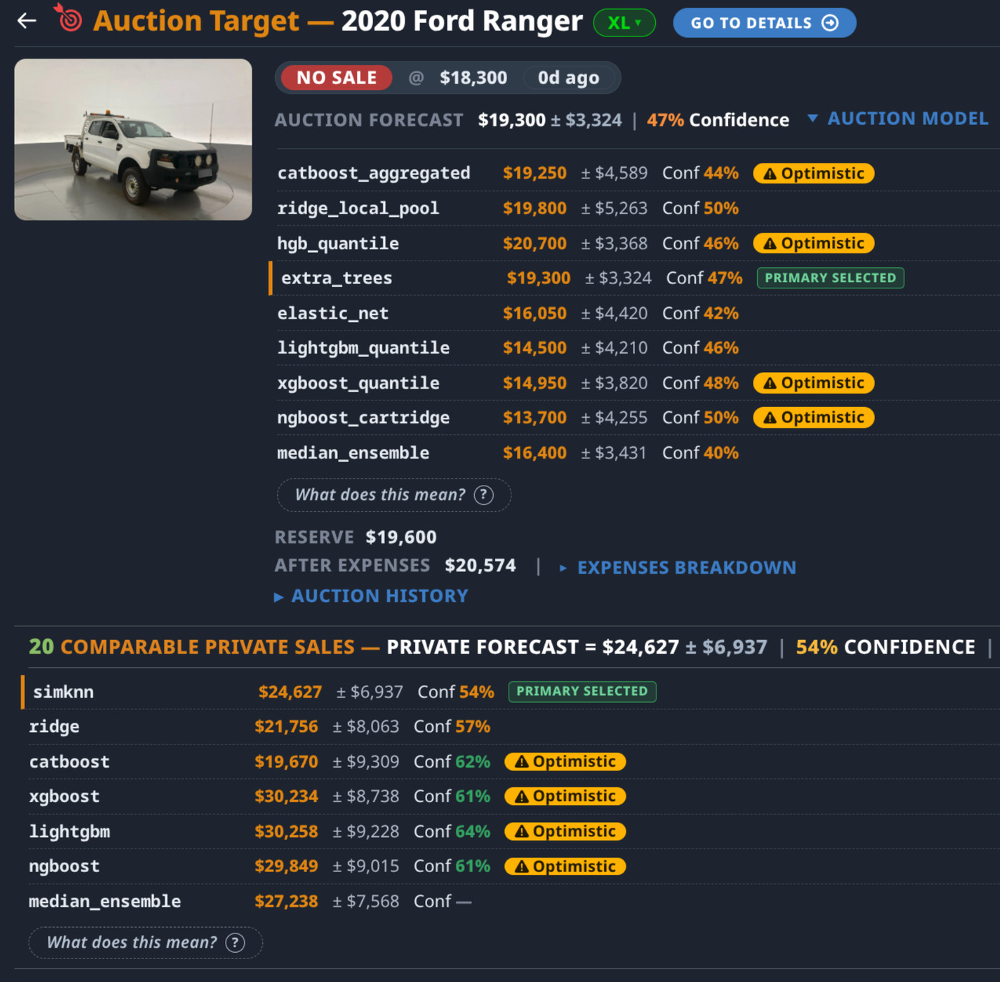
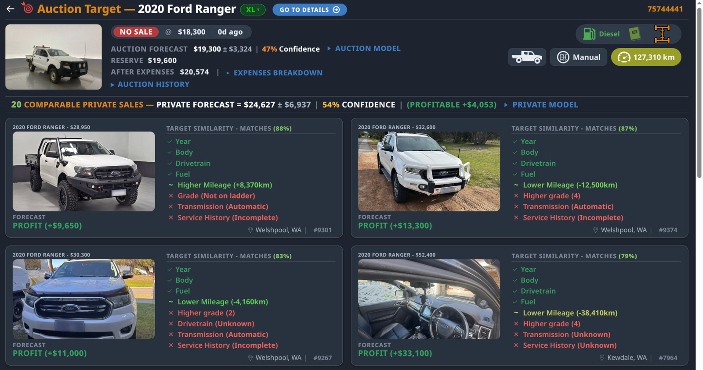
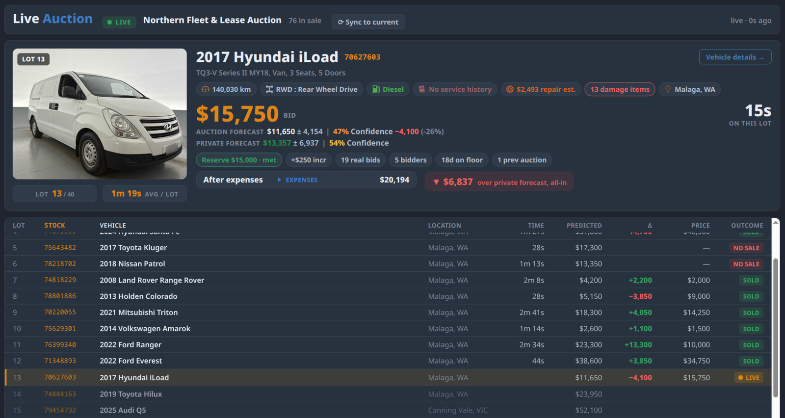
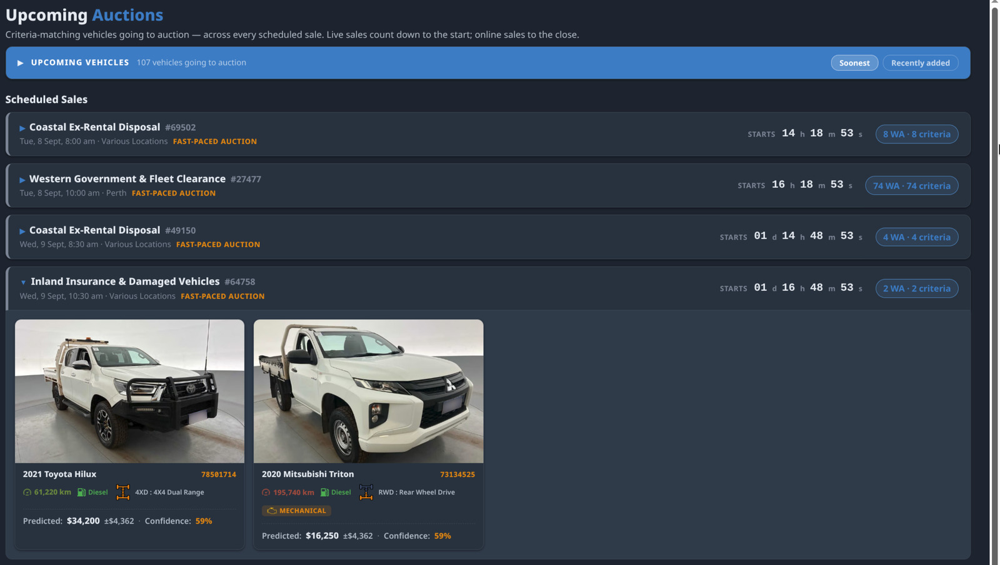
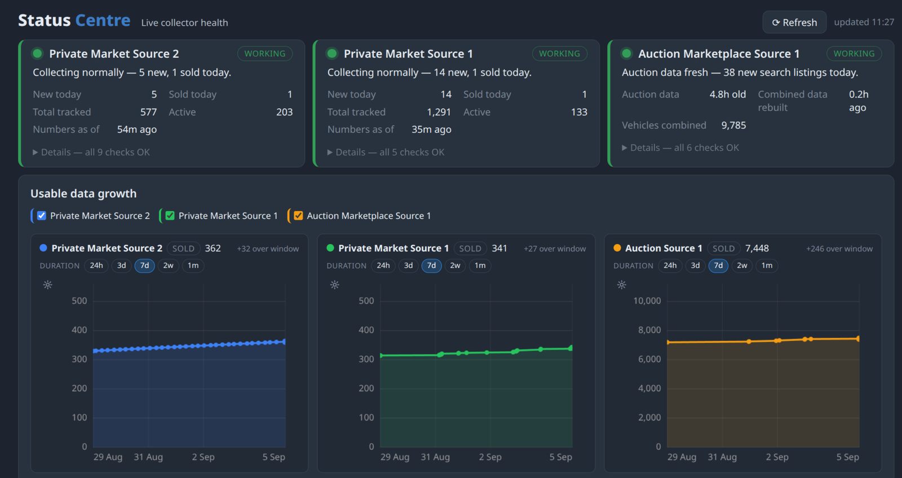

Is there such a thing as a good deal at the auctions? What could it be sold for privately, and how would you find out? Some say it takes years of experience. Could a computer acquire that experience? Cross Market Intelligence exists to answer these questions.
A car is about to be auctioned. The system predicts the final bid, and what you could sell it for afterwards. Is there a profit margin there? It provides the predicted margin for every vehicle.
{kind=link}

How long would it take you to work out that margin yourself? Registration, stamp duty, the auction house's fee, the repairs and the rest of it. Each one worked out by hand, for every car in the sale. Might take a few minutes each time. CMI delivers prices that are transparent, prices that include all the hidden costs. Without a tool that has that rigour built in, the ones you miss turn into an expensive lesson.
{kind=link}
{kind=link}
{kind=link}
Transparency
Every prediction tells you how often it has been right before, so you know how reliable it is before you act on it.
{kind=link}

Each one is built from cars that actually sold, and from what the system has learned about which differences push a price up or down. The cars it deems comparable to yours are listed along with what's the same about them and what differs, so you can judge whether the comparison is fair.
{kind=link}

While The Bidding Runs
Say you have about ninety seconds to bid on a vehicle. There is no time to work anything out during the auction. You bid on the amount you see, but that is not what the car will actually cost. The Live Auction page updates live as the bidding runs, showing what the current bid comes to once every charge is added, what it forecasts you could sell it for, and the gap between the two, restated each time the bid moves.
{kind=link}

Every car already sold that day stays on screen, so you can see if there have been any good deals in this auction before your one comes up.
Ahead Of The Sale
See what vehicles are going to be in the next auction, and how many hours or days away that auction is, so you can prepare.
{kind=link}

Get notified when vehicles in your watchlist are going to auction.
If you decide to inspect a car in person before you buy, the phone app means you can take CMI with you, and use the inspection feature which gives you a form to fill in as you walk around it. Type into the fields, add photos, or record a voice memo, so you have the same notes on every vehicle when you get home.
{kind=link}
{kind=link}
{kind=link}
